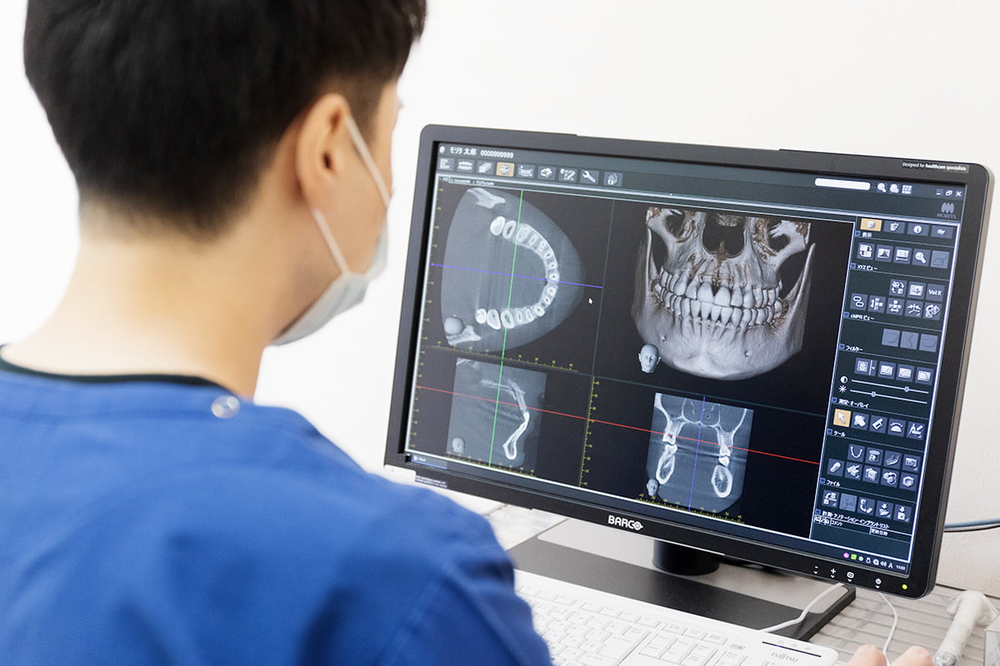
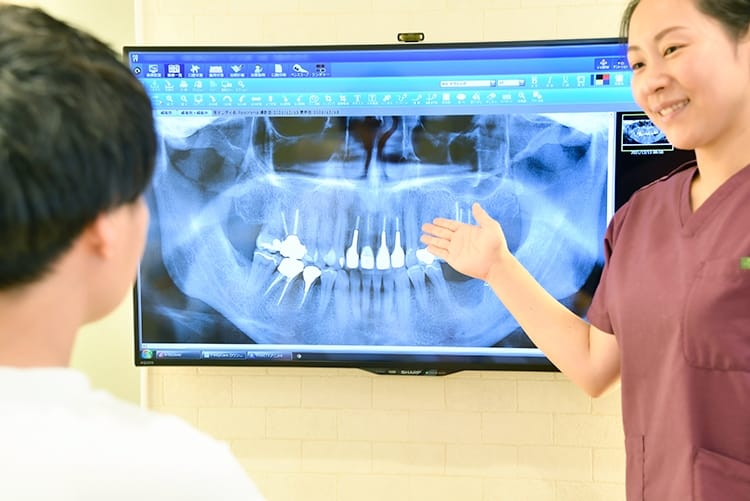
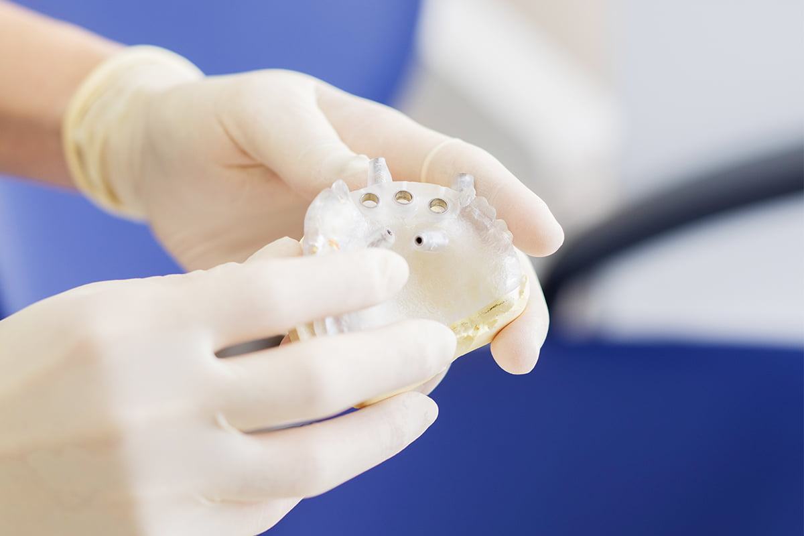
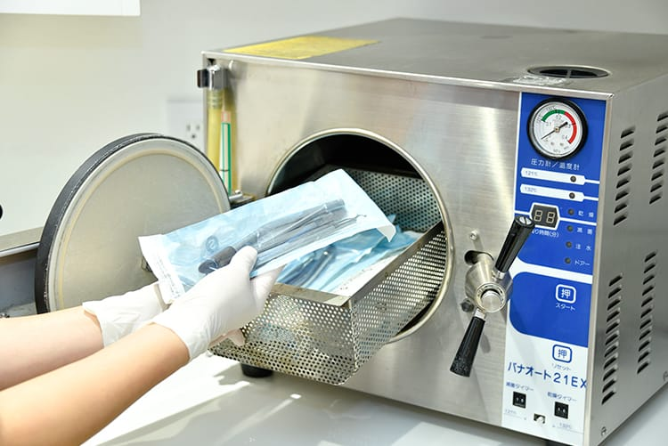
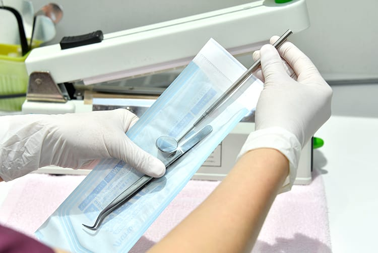
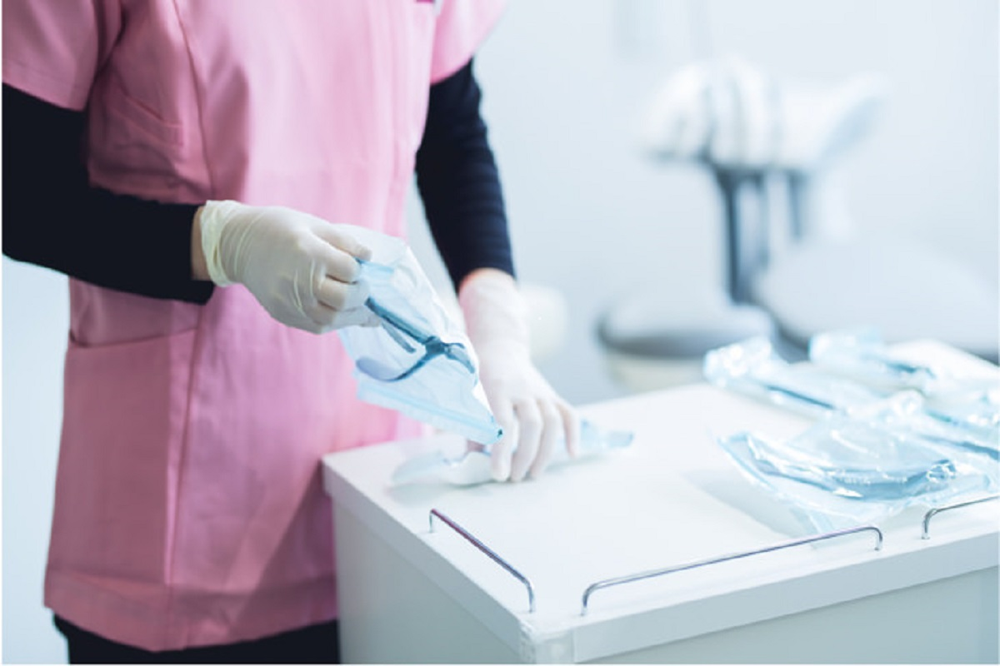
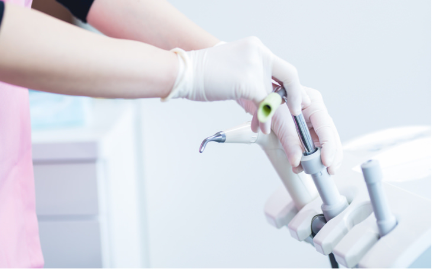
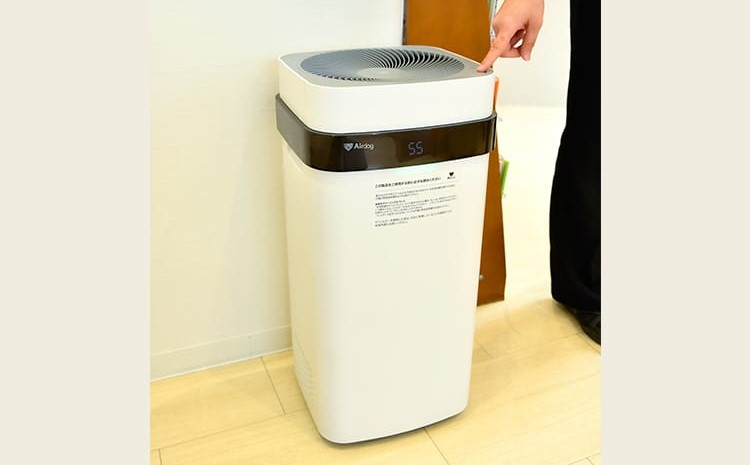
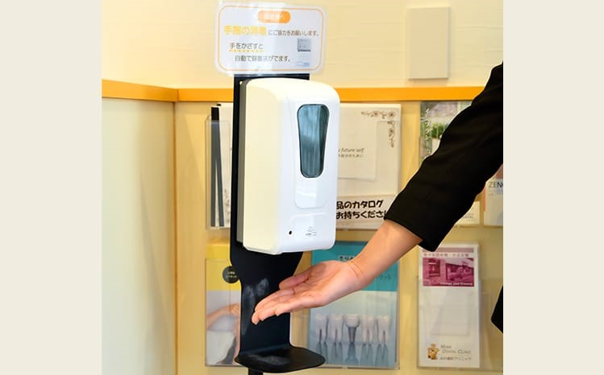

可即時讀取CT或是X光以進行準確診斷及檢查，讓治療比以前更準確。

每個診療間都安裝了電腦顯示器，讓醫生能夠方便解釋X光片、拍攝的圖像讓病人理解。

通過使用數位CT數據的模擬軟件齒模進行治療或手術，提供安全可靠的植牙治療、矯正等服務。

使用高壓滅菌器進行蒸氣消毒治療的設備，可以用它來消滅所有的細菌和病毒。

除了使用高壓滅菌器消毒外，診所也安裝了紫外線消毒設備，在患者接受治療之前清潔設備，以防止感染。

將高壓滅菌過的治療設備存放在無菌包裝中，
在密封打開之前，確保它是完全無菌的。

用於治療患者的設備將在完成後立即將該設備進行消毒，
願為患者提供舒適整潔的治療環境。

我們安裝了空氣淨化器，讓患者盡可能不受花粉和病毒的影響，
保持室內空氣的乾爽及清新。

酒精消毒
接待處和洗手間均有放置酒精消毒劑，徹底預防感染。